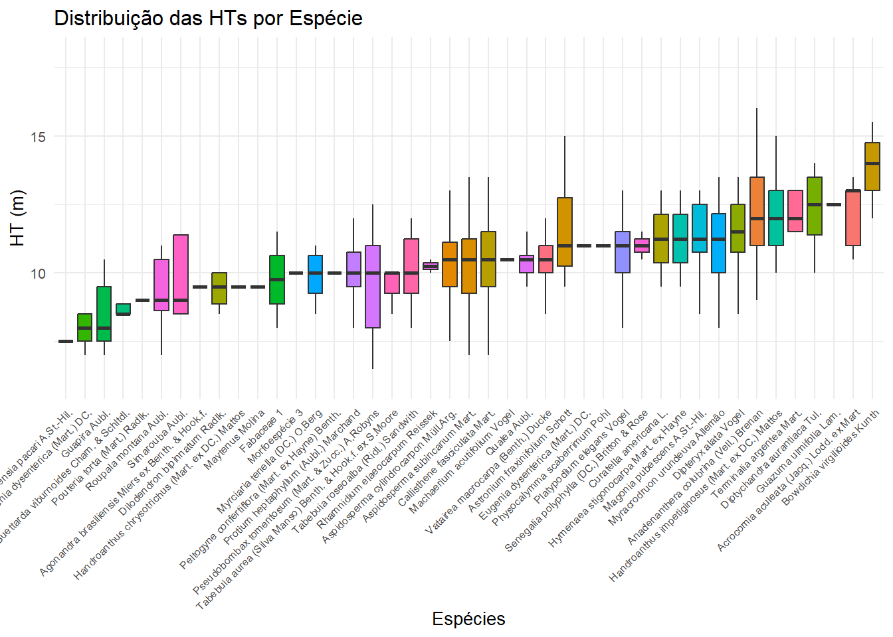
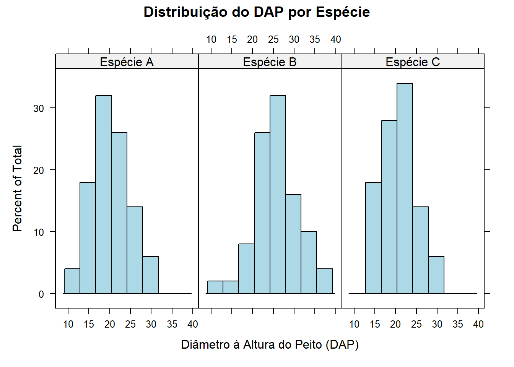
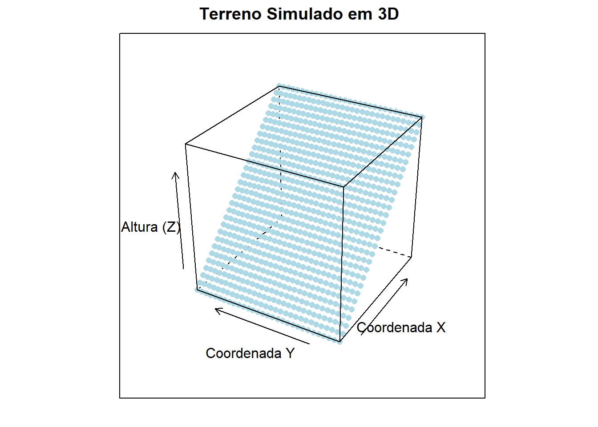

2.4 Pacote lattice
O pacote lattice é uma poderosa ferramenta para criar gráficos condicionais e exploratórios. Ele é especialmente útil quando trabalhamos com conjuntos de dados categorizados, como medidas florestais agrupadas por espécies, localizações ou períodos de tempo.
2.4.1 Dispersão condicional
Imagine que temos dados sobre o diâmetro das árvores (DAP) e a altura delas em diferentes parcelas florestais. Com lattice, podemos visualizar as relações entre essas variáveis, separadas por parcelas.
library(lattice)
# Dados simulados
set.seed(123)
dados <- data.frame(
Parcela = factor(rep(1:3, each = 50)),
DAP = c(rnorm(50, mean = 20, sd = 5),
rnorm(50, mean = 25, sd = 6),
rnorm(50, mean = 22, sd = 4)),
Altura = c(rnorm(50, mean = 15, sd = 3),
rnorm(50, mean = 18, sd = 2),
rnorm(50, mean = 16, sd = 3))
)
# Gráfico de dispersão por parcela
xyplot(Altura ~ DAP | Parcela, data = dados,
main = "Altura x DAP por Parcela",
xlab = "Diâmetro à Altura do Peito (DAP)",
ylab = "Altura (m)",
col = "red", pch = 16)
2.4.2 Histograma condicional
Os histogramas condicionais são úteis para visualizar a distribuição do DAP em diferentes espécies de árvores.
# Dados simulados
dados$Especie <- factor(rep(c("Espécie A", "Espécie B", "Espécie C"), each = 50))
# Histograma por espécie
histogram(~ DAP | Especie, data = dados,
main = "Distribuição do DAP por Espécie",
xlab = "Diâmetro à Altura do Peito (DAP)",
col = "lightblue", border = "black")
2.4.3 Boxplot comparativo
Os boxplots são ideais para comparar a altura das árvores entre espécies em diferentes parcelas.
# Ajustando o boxplot
bwplot(Altura ~ Especie | Parcela, data = dados,
main = "Altura por Espécie e Parcela",
xlab = "Espécie", ylab = "Altura (m)",
col = "forestgreen",
par.settings = list(box.rectangle = list(col = "blue"),
plot.symbol = list(col = "darkgreen", pch = 16)),
scales = list(x = list(rot = 45))) # Rotação dos rótulos no eixo X
2.4.4 Barras por classes
Se quisermos visualizar a contagem de árvores por espécie em cada parcela, o gráfico de barras é uma escolha apropriada.
# Reorganizando os dados para melhor visualização
library(reshape2)
dados_barras <- as.data.frame(contagem)
names(dados_barras) <- c("Especie", "Parcela", "Contagem")
# Gráfico de barras mais visual
barchart(Contagem ~ Especie | Parcela, data = dados_barras,
main = "Número de Árvores por Espécie e Parcela",
xlab = "Espécie", ylab = "Número de Árvores",
col = c("darkgreen", "lightgreen", "brown"),
auto.key = list(columns = 3), # Legenda com as espécies
panel = function(x, y, ...) {
panel.barchart(x, y, ...)
panel.text(x, y, labels = y, pos = 3, cex = 0.8) # Rótulos numéricos
},
scales = list(x = list(rot = 45))) # Rotação dos rótulos no eixo X
2.4.5 Gráficos 3D
Se você trabalha com dados ambientais ou florestais que envolvem superfícies, como elevação, densidade de árvores ou biomassa em um terreno, os gráficos de superfície podem ser úteis.
library(lattice)
# Dados simulados
set.seed(123)
dados <- data.frame(
Parcela = factor(rep(1:3, each = 50)), # Três parcelas
DAP = c(rnorm(50, mean = 20, sd = 5),
rnorm(50, mean = 25, sd = 4),
rnorm(50, mean = 30, sd = 6)), # Diâmetro
Altura = c(rnorm(50, mean = 15, sd = 3),
rnorm(50, mean = 18, sd = 2),
rnorm(50, mean = 20, sd = 4)), # Altura
Biomassa = c(rnorm(50, mean = 200, sd = 50),
rnorm(50, mean = 300, sd = 40),
rnorm(50, mean = 400, sd = 60)) # Biomassa
)
# Gráfico 3D condicional
cloud(Biomassa ~ DAP * Altura | Parcela, data = dados,
main = "Relação 3D: Biomassa, DAP e Altura por Parcela",
xlab = "Diâmetro (DAP)",
ylab = "Altura (m)",
zlab = "Biomassa (kg)",
screen = list(z = 60, x = -60), # Ajuste do ângulo de visualização
col = "forestgreen",
pch = 16) # Pontos no gráfico
library(lattice)
# Gerando coordenadas x e y (grid regular)
x <- seq(-10, 10, length = 30) # 30 pontos no eixo X
y <- seq(-10, 10, length = 30) # 30 pontos no eixo Y
# Gerando altura (z) com base em uma função para criar uma superfície
z <- outer(x, y, function(x, y) x * 2)
# Convertendo para um data frame para usar com cloud()
dados <- expand.grid(x = x, y = y)
dados$z <- as.vector(z)
# Gráfico 3D simulando o terreno
cloud(z ~ x * y, data = dados,
main = "Terreno Simulado em 3D",
xlab = "Coordenada X",
ylab = "Coordenada Y",
zlab = "Altura (Z)",
screen = list(z = 60, x = -60), # Ângulo de visualização
col = "lightblue", # Cor dos pontos
panel.3d.cloud = panel.3dscatter, # Adiciona pontos ao gráfico
pch = 16) # Pontos sólidos
2.4.6 Densidade Condicional
Se você deseja comparar distribuições contínuas, como a altura de árvores em diferentes regiões ou espécies, os gráficos de densidade são uma alternativa elegante aos histogramas.
# Gerando dados simulados com a variável Especie
set.seed(123)
dados <- data.frame(
Altura = c(rnorm(50, mean = 15, sd = 3),
rnorm(50, mean = 18, sd = 2),
rnorm(50, mean = 20, sd = 4)),
Especie = factor(rep(c("Espécie A", "Espécie B", "Espécie C"), each = 50))
)
# Gráfico de densidade
densityplot(~ Altura | Especie, data = dados,
main = "Densidade da Altura por Espécie",
xlab = "Altura (m)",
plot.points = FALSE, # Ocultar pontos individuais
col = c("blue", "darkgreen", "orange"))
2.4.7 Matrix de dispersão (Scatterplot Matrix)
Se você tem várias variáveis numéricas e quer explorar as relações entre elas, o lattice oferece o splom() (scatterplot matrix).
# Gerando os dados simulados com DAP e Altura
set.seed(123)
dados <- data.frame(
DAP = c(rnorm(50, mean = 20, sd = 5),
rnorm(50, mean = 25, sd = 6),
rnorm(50, mean = 30, sd = 4)),
Altura = c(rnorm(50, mean = 15, sd = 3),
rnorm(50, mean = 18, sd = 2),
rnorm(50, mean = 20, sd = 4))
)
# Calculando a biomassa
dados$Biomassa <- dados$DAP * dados$Altura * rnorm(150, mean = 0.1, sd = 0.01)
# Gerando o scatterplot matrix (splom)
library(lattice)
splom(~ dados[c("DAP", "Altura", "Biomassa")],
main = "Matriz de Dispersão",
col = "darkblue", pch = 16)
2.4.8 Temporal condicional
Se você possui dados temporais, como crescimento de árvores ao longo de anos ou medições sazonais, os gráficos de linha com painéis são muito úteis.
# Dados simulados de crescimento anual
set.seed(123)
anos <- 2000:2020
crescimento <- expand.grid(Ano = anos, Especie = c("Espécie A", "Espécie B", "Espécie C"))
crescimento$Altura <- with(crescimento, ifelse(Especie == "Espécie A",
rnorm(length(Ano), mean = Ano - 1995, sd = 0.5),
ifelse(Especie == "Espécie B",
rnorm(length(Ano), mean = Ano - 1993, sd = 0.7),
rnorm(length(Ano), mean = Ano - 1990, sd = 0.6))))
# Gráfico de linha com painéis
xyplot(Altura ~ Ano | Especie, data = crescimento,
type = "o", col = "darkgreen", pch = 16,
main = "Crescimento por Espécie ao Longo dos Anos",
xlab = "Ano", ylab = "Altura (m)")